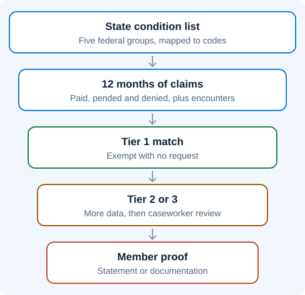

States must check data they already hold before asking a member for proof. Every frail member identified this way keeps their coverage without ever receiving a request.
Figure 1. Data First, Paperwork Last

List The Qualifying Conditions - Start from the five federal groups and decide which diseases and diagnoses belong on your state's list.
Match Them To Code Sets - Map each condition to ICD-10 diagnosis codes, and add pharmacy or equipment codes where they show severity.
Conditions that can be confirmed from diagnosis data alone.
Tier 2
Conditions that need supporting signs, such as frequent hospital use, high-risk combinations of medicines, or medical equipment claims.
Tier 3
Not enough data to decide, so a caseworker reviews the case by hand.
Note:
CMS wrote these tiers around the impairment test the court has now struck down, so confirm how your state applies them.
Run 12 Months Of Data - Check claims from the preceding 12 months, including paid, pended and denied claims, along with encounter data from managed care plans.
CMS also names other sources, including health information exchanges, workers' compensation and short-term disability claims.
Handle Substance Use Records With Care - Records covered by 42 CFR Part 2 follow stricter confidentiality rules, and states are still waiting for CMS guidance on how those rules apply here.
Record The Evidence And Set A Review Date - Note which data confirmed each exemption. Frailty status must be checked again at least every 12 months.
Members whose records clearly show frailty are exempt before any notice goes out, and caseworkers handle only the cases the data can't settle.